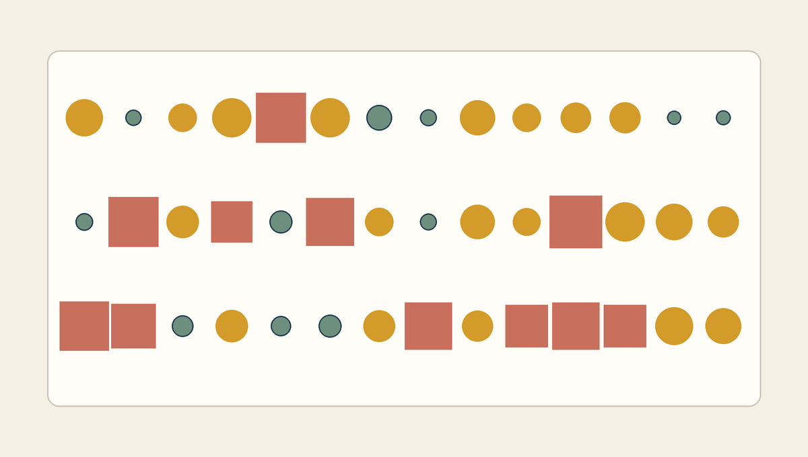

난수는 변화를 만들고 조건문은 그 변화에 질서를 부여한다
- 형식
- 목표 달성형 개인 실습, 최대 50분
- 완료
- 자동 검사 PASS와 두 파일 제출
- 제출
.ipynb+.png
오늘의 실습 목표
- 고정 요소, 무작위 요소, 조건 결과가 드러나는 생성 규칙을 한 문장으로 작성할 수 있습니다.
seed_number,shape_count, 두 조건 기준, RGB 팔레트를 안전한 범위 안에서 설계할 수 있습니다.random.randint()로 크기와 안전한 위치를 선택하고random.choice()로 팔레트 색을 선택할 수 있습니다.- 같은 크기 값을
if / elif / else에 전달해 큰·중간·작은 도형을 서로 다른 방식으로 표현할 수 있습니다. - 시드가 같으면 같은 호출 순서에서 같은 결과가 다시 만들어진다는 사실을 전체 재실행으로 확인할 수 있습니다.
- 최종 이미지를 PNG로 저장하고, 자동 검사 PASS와 두 파일 제출로 완성을 증명할 수 있습니다.
50분을 채우는 수업이 아니라 완성을 증명하는 수업
처음 0-7분의 공통 안내가 끝나면 각자 자신의 속도로 진행합니다. 자동 검사에서 완료 문구를 확인하고 `.ipynb`와 `.png` 두 파일을 제출한 학생은 수업 종료 시각을 기다리지 않고 바로 귀가할 수 있습니다.
속도와 미적 취향은 평가하지 않습니다. 빠르게 완성하든 여러 시드를 비교한 뒤 완성하든 동일한 기능 조건으로 판정합니다.
- 준비노트북 사본과 파일명
- 설계규칙 문장과 생성 값
- 난수
randint·choice네 줄 - 분기세 시각 결과 확인
- 검증PNG 저장과 자동 PASS
- 귀가두 파일 제출 확인
EXIT GATE
자동 검사 통과 + 두 파일 제출 확인 = 즉시 귀가
선택 확장은 의무가 아니며 추가 점수도 없습니다. 필수 결과물을 완성했다면 다른 학생을 기다리거나 작품을 더 꾸밀 필요가 없습니다.
귀가 조건: 제출 전에 아홉 가지 확인
- 노트북 파일명
week05_학번_이름.ipynb형식으로 변경했습니다. - 제출 정보학번, 이름 또는 별명, 20자 이상의 생성 규칙 문장을 작성했습니다.
- 생성 규모기준과 다른 시드와 40~80 사이의 도형 개수를 정했습니다.
- 조건 구간두 threshold를 모두 바꾸고 작은·중간·큰 구간을 각각 10 이상 확보했습니다.
- 팔레트 설계서로 다른 다섯 색을 사용하고 기준 팔레트에서 최소 세 역할을 변경했습니다.
- 난수 네 줄크기·x·y는
randint(), 기본색은choice()로 선택했습니다. - 조건 결과
if / elif / else가운데 최소 두 종류의 시각 결과가 실제로 나타납니다. - 최종 검증600 × 600 PNG를 저장하고 새 세션의 전체 실행에서 자동 검사 PASS를 받았습니다.
- 두 파일 제출실행 결과가 포함된 `.ipynb`와 최종 `.png`를 제출했습니다.
자동 검사는 작품의 아름다움을 판정하지 않는다
검사 셀은 시드와 규칙값을 실제로 바꾸었는지, 난수 코드가 올바른 범위에서 작동하는지, 도형이 40픽셀 안전 여백 안에 있는지, 조건 분기가 나타나는지, PNG가 현재 이미지와 같은지만 확인합니다. 어떤 색과 배치가 더 좋은지는 하나의 정답으로 채점하지 않습니다.
50분 진행 기준
| 시간 | 단계 | 완료 표시 |
|---|---|---|
| 0-7분 | 공통 안내, 노트북 열기, Drive 사본 저장, 파일명 변경 | 자신의 사본이 열림 |
| 7-14분 | 수정 전 기준 코드 실행과 겹친 도형의 원인 확인 | 같은 값이 반복됨을 설명 |
| 14-23분 | 제출 정보, 규칙 문장, 시드·개수·조건·색상 설계 | EDIT 값 입력 완료 |
| 23-34분 | 난수 네 줄 작성과 크기·위치·색상 변화 확인 | 여러 도형이 분산됨 |
| 34-40분 | 분기 횟수 확인, 시드 또는 조건 기준 한 번 조정 | 두 분기 이상 나타남 |
| 40-45분 | PNG 저장, 세션 다시 시작, 모두 실행, 자동 검사 | 완료 문구 표시 |
| 45-50분 | 노트북과 PNG 다운로드, 두 파일 제출 | 제출 확인 후 귀가 |
위 시간은 기다려야 하는 시각이 아니라 길을 잃지 않기 위한 기준입니다. 32분에 아홉 조건을 모두 달성한 학생은 32분에 제출하고 귀가할 수 있습니다. 반대로 오류를 수정할 시간이 더 필요한 학생은 최대 50분까지 자신의 속도로 진행합니다.
실습 노트북 준비
위의 시작 버튼으로 여는 템플릿에는 이미지 생성 반복문, if / elif / else, PNG 저장, 자동 검사 코드가 이미 준비되어 있습니다. 빈 노트북에서 전체 프로그램을 다시 작성하지 않습니다. 학생이 직접 수정하는 곳은 EDIT 표시가 있는 설계값과 난수 코드 네 줄입니다.
- 노트북이 열리면 파일 → Drive에 사본 저장을 선택합니다.
- 상단 파일명을 눌러
week05_학번_이름.ipynb로 바꿉니다. - 각 코드 셀 왼쪽의 실행 버튼을 눌러 준비 셀부터 순서대로 실행합니다.
EDIT영역만 수정하고DO NOT EDIT영역은 그대로 둡니다.
노트북이 Colab에서 열리지 않을 때
위의 노트북 내려받기 버튼으로 파일을 기기에 저장합니다. Colab 첫 화면의 업로드 탭 또는 열린 노트북의 파일 → 노트 업로드에서 내려받은 .ipynb 파일을 선택합니다.
코드 셀을 실행했는데 아무 이미지도 보이지 않을 때
준비와 제출 정보 셀은 문자열 저장만 하므로 이미지가 나오지 않아도 정상입니다. 설계값 셀에서는 팔레트가, 이미지 생성 셀에서는 600 × 600 이미지가 보여야 합니다. 빨간 오류가 있으면 해당 셀보다 위에 있는 셀부터 다시 순서대로 실행합니다.
수정 전 결과 확인
처음에는 난수 네 줄을 바꾸지 않고 준비 셀부터 이미지 생성 셀까지 실행합니다. 반복문은 여러 번 돌지만 매번 같은 크기, 같은 위치, 같은 색을 사용하므로 도형들이 한곳에 겹쳐 하나처럼 보입니다.
size = min_size
x = margin
y = margin
base_color = palette[0]shape_count가 36이어도 위 네 값이 반복마다 같으면 36개가 정확히 포개집니다. 반복 횟수만 늘리는 것으로 변화가 생기지 않습니다. 오늘의 핵심은 이 네 줄을 “허용 범위 안에서 매번 다시 선택하는 코드”로 바꾸는 것입니다.
“도형 수는 여러 개지만 크기·x·y·색이 모두 같아 한곳에 겹친다”라고 원인을 말할 수 있으면 기준 확인을 완료했습니다.
제출 정보와 생성 규칙 작성
제출 정보 셀에서 = 오른쪽의 따옴표 안 내용만 자신의 정보로 바꿉니다. design_rule은 결과의 감상이 아니라 프로그램의 작동 방식을 설명하는 문장입니다.
student_id = "20260001"
student_name = "김민지"
design_rule = "다섯 색과 여백은 고정하고 위치와 크기를 무작위로 선택하며, 크기에 따라 도형을 바꾼다."| 요소 | 이번 미션의 예 | 문장에서 답할 질문 |
|---|---|---|
| 고정 요소 | 600 × 600 크기, 여백, 다섯 색의 역할 | 모든 실행에서 무엇을 유지하는가? |
| 무작위 요소 | 도형의 크기, x·y 위치, 기본색 | 매 반복에서 무엇을 다시 선택하는가? |
| 조건 결과 | 큰 값은 사각형, 중간 값은 채운 원, 작은 값은 윤곽 원 | 선택된 값에 따라 무엇이 달라지는가? |
“무작위로 예쁘게 만든다”가 규칙 문장으로 부족한 이유
무엇이 고정되고 무엇이 바뀌는지, 어떤 조건이 어떤 시각 결과를 만드는지 확인할 수 없기 때문입니다. “팔레트와 여백은 고정하고 위치·크기·색을 무작위로 선택하며, 크기에 따라 형태를 바꾼다”처럼 프로그램의 선택과 분기를 구체적으로 씁니다.
시드와 조건 설계
설계값 셀의 EDIT 영역은 생성 시스템의 조절판입니다. 먼저 아래 권장값으로 작동을 확인한 뒤, 자동 검사 전에는 자신의 선택으로 한 번 더 조정해도 됩니다.
seed_number = 73
shape_count = 56
medium_threshold = 42
large_threshold = 64
background_color = (235, 241, 250)
primary_color = (48, 112, 166)
secondary_color = (92, 150, 118)
accent_color = (230, 83, 72)
outline_color = (35, 42, 55)| 변수 | 역할 | 완료 조건 |
|---|---|---|
seed_number | 무작위 선택 순서를 다시 재현하는 번호 | 기준 11과 다른 0~9999 정수 |
shape_count | 반복문이 만들 도형의 수 | 기준 36과 다른 40~80 정수 |
medium_threshold | 작은 도형과 중간 도형의 경계 | 20보다 크고 큰 기준보다 작음 |
large_threshold | 중간 도형과 큰 도형의 경계 | 중간 기준보다 크고 80보다 작음 |
다섯 color | 배경·주조·보조·강조·윤곽의 RGB | 모두 다르고 기준에서 세 역할 이상 변경 |
두 경계값이 세 가지 시각 결과를 만든다
if size >= large_threshold:
# 큰 값: 강조색 사각형
elif size >= medium_threshold:
# 중간 값: 팔레트 색으로 채운 원
else:
# 작은 값: 팔레트 색의 윤곽 원예를 들어 medium_threshold = 42, large_threshold = 64라면 크기 20~41은 작은 분기, 42~63은 중간 분기, 64~80은 큰 분기에 들어갑니다. if가 큰 기준을 먼저 확인하기 때문에 70은 첫 번째 분기에서 멈추고 elif를 다시 실행하지 않습니다.

팔레트 미리보기에 서로 다른 다섯 색이 보이고, 출력에 현재 변경한 규칙 값: 4개와 현재 변경한 색상 역할: 3개 이상이 나타나면 다음 단계로 이동합니다.
threshold 순서 또는 구간 오류가 나올 때
20 < medium_threshold < large_threshold < 80을 숫자로 읽습니다. 작은·중간·큰 구간이 각각 10 이상이어야 하므로 권장값 42와 64에서 시작합니다. 두 값을 같은 숫자로 두거나 순서를 바꾸지 않습니다.
RGB 오류가 나올 때
각 색이 (R, G, B) 형태인지 확인합니다. 둥근괄호 안에는 따옴표 없는 정수 세 개가 필요하며 각 수는 0~255여야 합니다. 다섯 색이 서로 같은지도 함께 확인합니다.
난수 선택 코드 완성
이미지 생성 반복문 안의 EDIT A 네 줄만 아래와 같이 바꿉니다. 앞의 네 칸 들여쓰기를 유지합니다. 함수 이름, 괄호, 쉼표를 한 글자씩 비교하며 입력합니다.
size = random.randint(min_size, max_size)
x = random.randint(margin, canvas_width - margin - size)
y = random.randint(margin, canvas_height - margin - size)
base_color = random.choice(palette)| 코드 | 말로 읽기 | 왜 이 범위인가? |
|---|---|---|
size | 20부터 80까지에서 크기 정수 하나를 선택 | randint는 양쪽 끝값을 포함 |
x | 왼쪽 여백부터 오른쪽 안전 한계까지 x 하나를 선택 | 오른쪽 끝에 도형 크기를 더해도 여백 안에 남음 |
y | 위 여백부터 아래 안전 한계까지 y 하나를 선택 | 아래 끝에 도형 크기를 더해도 여백 안에 남음 |
base_color | 세 색이 담긴 팔레트에서 항목 하나를 선택 | choice에는 리스트를 전달 |
크기를 먼저 선택한 뒤 x와 y를 선택한다
x와 y의 최대값에는 현재 size가 들어갑니다. 따라서 크기를 먼저 선택해야 큰 도형도 화면 밖으로 잘리지 않습니다. 네 줄의 순서를 바꾸거나 - size를 지우지 않습니다.
셀을 실행하면 화면 아래에 서로 다른 크기 수, 서로 다른 위치 수, 선택된 팔레트 색상 수, 세 조건 분기의 횟수가 출력됩니다. 이 숫자는 결과가 우연히 마음에 드는지를 평가하는 점수가 아니라 코드가 실제로 변화와 분기를 만들었는지 확인하는 계기판입니다.
여러 크기와 위치의 도형이 화면에 흩어지고, 팔레트 색이 두 종류 이상 선택되며, 조건 분기 횟수에서 두 항목 이상이 0보다 크면 난수와 조건 연결을 완료했습니다.
NameError: name 'random' is not defined가 나올 때
준비 셀의 import random이 실행되지 않았다는 뜻입니다. 준비 셀부터 위에서 아래로 다시 실행합니다. 함수 이름 앞의 random.을 지우지 않습니다.
ValueError: empty range가 나올 때
x 또는 y의 최소값이 최대값보다 커졌을 때 나타납니다. min_size = 20, max_size = 80, margin = 40은 수정하지 않았는지 확인하고 x·y 줄의 - margin - size가 모두 남아 있는지 비교합니다.
도형이 여전히 하나처럼 겹칠 때
이미지 생성 셀의 네 줄 가운데 x와 y가 여전히 margin으로 남아 있을 가능성이 큽니다. 크기만 무작위로 바꾸어도 중심 위치가 같으면 도형이 겹쳐 보입니다. 안내된 네 줄을 모두 바꾼 뒤 셀을 다시 실행합니다.
결과 확인과 한 번의 조정
코드가 작동하면 곧바로 무한히 꾸미지 않습니다. 먼저 같은 시스템 안에서 어떤 값을 바꾸면 무엇이 달라지는지 구분합니다.
| 바꾸는 값 | 달라지는 것 | 유지되는 것 |
|---|---|---|
| 시드만 변경 | 크기·위치·색의 선택 순서와 전체 배치 | 도형 수, 팔레트, 조건 기준 |
| 도형 수만 변경 | 밀도와 겹침의 정도 | 초반의 난수 선택 순서 |
| 두 threshold만 변경 | 큰·중간·작은 분기의 비율 | 같은 시드의 크기·위치·기본색 후보 |
| 팔레트만 변경 | 색의 인상과 대비 | 배치, 크기, 분기 종류 |

- 현재 이미지에서 먼저 눈에 들어오는 분기와 거의 보이지 않는 분기를 확인합니다.
- 분기 비율을 바꾸고 싶으면 두 threshold 가운데 하나만 조정합니다.
- 배치 자체를 바꾸고 싶으면 seed_number만 다른 정수로 바꿉니다.
- 설계값 셀과 이미지 생성 셀을 다시 실행하고, 이전 결과와 달라진 이유를 한 문장으로 말합니다.
- 완료 조건을 만족하면 더 이상 의무적으로 수정하지 않습니다.
한 종류의 조건 분기만 나타날 때
먼저 이미지 생성 셀 출력의 branch_counts를 확인합니다. 안내된 권장값 42와 64를 사용해도 한 종류만 나온다면 난수 네 줄이 정확한지 확인합니다. 코드가 정확하다면 시드를 한 번 바꾸고 설계값 셀부터 다시 실행합니다.
PNG 저장
사용할 결과를 정했다면 PNG 저장 셀을 실행합니다. 파일명은 직접 입력하지 않으며 제출 정보와 시드로 자동 생성됩니다.
week05_학번_이름_seed시드번호.png예를 들어 학번이 20260001, 이름이 김민지, 시드가 73이면 week05_20260001_김민지_seed73.png가 생성됩니다. 저장 셀 아래에 다시 표시되는 이미지가 최종 화면과 같은지 확인합니다.
값을 수정한 뒤에는 반드시 다시 생성하고 저장한다
시드·조건·색상을 바꾼 뒤 저장 셀만 실행하면 이전 image가 저장될 수 있습니다. 최종 수정 후에는 설계값 → 이미지 생성 → PNG 저장 순서로 실행합니다.
자동 검사 PASS
- 현재 수정 내용이 Drive 사본에 저장되었는지 확인합니다.
- 런타임 → 세션 다시 시작을 선택합니다.
- 런타임 → 모두 실행을 한 번 선택합니다.
- 중간 셀을 따로 누르지 말고 FINAL CHECK까지 기다립니다.
- 아래 일곱 줄이 모두 나타나는지 확인합니다.
✅ 제출 정보와 생성 규칙 문장 검사 통과
✅ 시드·개수·팔레트·조건 기준 검사 통과
✅ randint·choice와 안전한 좌표 검사 통과
✅ if / elif / else 분기 결과 검사 통과
✅ 600 × 600 RGB 이미지와 PNG 저장 검사 통과
✅ 새 런타임 전체 실행 검사 통과
🎉 WEEK 05 GENERATIVE MISSION COMPLETE
FINAL CHECK 코드는 학습 범위가 아니다
검사 셀에는 아직 배우지 않은 딕셔너리, 집합, 파일 비교 코드가 포함되어 있습니다. 학생이 직접 작성하거나 해석할 필요가 없습니다. 오류의 마지막 한글 문장을 읽고 해당 EDIT 영역만 수정합니다. 검사 코드를 지우거나 바꾸어 통과시키면 완료로 인정하지 않습니다.
“randint·choice 코드로 정확히 바꾸세요”라는 오류가 나올 때
이미지 생성 반복문의 네 시작 줄을 교안의 코드와 한 줄씩 비교합니다. randint의 두 괄호, x·y 최대값의 - margin - size, choice(palette)를 확인한 뒤 이미지 생성 셀과 저장 셀을 다시 실행합니다.
PNG가 현재 이미지와 다르다는 오류가 나올 때
이미지를 만든 뒤 저장 셀을 다시 실행하지 않았다는 뜻입니다. 이미지 생성 셀과 PNG 저장 셀을 차례로 실행한 뒤 FINAL CHECK를 다시 실행합니다.
새 런타임 전체 실행 오류가 나올 때
셀을 따로 여러 번 실행한 상태입니다. 수정 내용을 저장하고 런타임 → 세션 다시 시작을 선택한 뒤 모두 실행을 한 번만 선택합니다. 실행 중에는 개별 셀 버튼을 누르지 않습니다.
두 파일 제출과 귀가
- 마지막 셀에 WEEK 05 GENERATIVE MISSION COMPLETE가 보이는지 확인합니다.
- 파일 → 다운로드 → .ipynb 다운로드로 실행 결과가 포함된 노트북을 받습니다.
- Colab 왼쪽 파일 목록에서
week05_학번_이름_seed시드번호.png를 찾아 다운로드합니다. - 제출함에
week05_학번_이름.ipynb와 최종 `.png` 두 파일을 모두 업로드합니다. - 제출 완료 상태를 확인하면 남은 시간과 관계없이 바로 귀가합니다.
완료 판정
자동 검사 PASS가 보이고 제출함에 올바른 `.ipynb`와 `.png`가 등록되었다면 오늘의 필수 학습 목표를 달성했습니다. 작품의 미적 취향, 작업 속도, 남은 수업 시간은 완료 판정에 반영하지 않습니다.
선택 확장: 제출 후 더 실험하고 싶은 경우만
아래 활동은 귀가 조건이 아니며 추가 점수도 없습니다. 필수 두 파일을 먼저 제출한 학생만 선택합니다.
- 시드만 바꾸어 두 번째 결과를 만들고 두 배치의 공통점과 차이를 비교합니다.
- 같은 시드에서 두 threshold만 바꾸어 큰·중간·작은 도형의 분기 횟수를 비교합니다.
- 같은 시드와 조건에서 팔레트만 바꾸어 구조는 유지되고 인상만 달라지는지 확인합니다.
- 제출을 마친 뒤 큰·중간·작은 분기 가운데 한 곳의 도형이나 색을 바꾸어 새로운 규칙을 시험합니다.
6주차 연결: 한 장의 코드에서 다시 쓰는 생성기로
이번 주에는 시드, 도형 수, 조건 기준, 팔레트 값을 바꾼 뒤 같은 이미지 생성 코드를 다시 실행했습니다. 따라서 새로운 변주를 만들 때마다 여러 셀을 찾아 실행해야 합니다. 6주차에는 이 과정을 없애는 것이 아니라 하나의 이름이 있는 함수로 묶어 다시 사용할 수 있게 만듭니다.
def create_poster(seed_number, shape_count, medium_threshold, large_threshold, palette):
# 5주차의 난수·반복·조건·도형 코드가 이 안으로 이동합니다.
return image
poster_a = create_poster(73, 56, 42, 64, palette)
poster_b = create_poster(91, 72, 48, 68, palette)| 5주차에 완성한 것 | 6주차에 새로 배우는 것 | 달라지는 제작 방식 |
|---|---|---|
| 한 번 실행되는 생성 코드 | def로 작업에 이름 붙이기 | 필요할 때 함수 이름으로 다시 호출 |
| 셀 위쪽의 설정 변수 | 매개변수와 인자로 값 전달 | 코드를 고치지 않고 호출값으로 조절 |
| 화면에 표시하고 저장한 이미지 | return image로 결과 돌려주기 | 여러 결과를 보관하고 비교하거나 다음 작업에 전달 |
| 시드 하나의 포스터 | 같은 함수를 서로 다른 값으로 세 번 호출 | 하나의 규칙을 공유하는 세 작품 제작 |
다음 주에 새로운 생성 알고리즘을 처음부터 다시 쓰지 않는다
6주차의 재료는 오늘 완성한 반복문, 난수, 조건문, Pillow 코드입니다. 새로 배우는 핵심은 기존 코드를 함수로 묶는 방법, 바깥에서 값을 전달하는 방법, 완성된 이미지를 함수 밖으로 돌려받는 방법입니다.
공식 도움말
- Google Colab 공식 입문 노트북코드 셀 실행, Drive 사본 저장, 노트북 사용법을 확인하는 공식 자료
- Python 공식 문서: random
seed(),randint(),choice()의 동작과 사용법 - Python 공식 튜토리얼: if Statements
if,elif,else조건 분기의 공식 설명 - Pillow 공식 문서: ImageDraw사각형과 타원의 경계 상자, 내부색, 윤곽선, 굵기에 관한 공식 설명
- Pillow 공식 문서: Image file formatsPNG를 포함한 이미지 파일 형식과 저장 방식